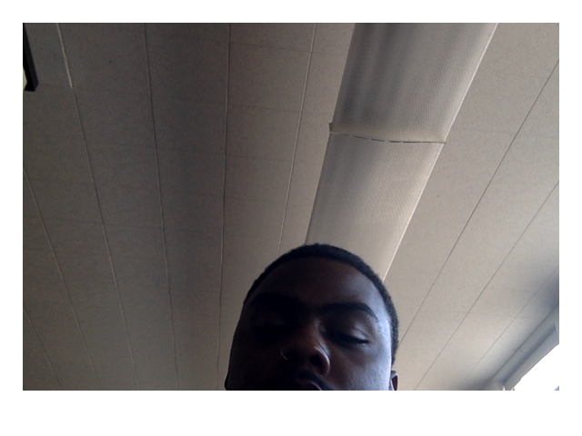
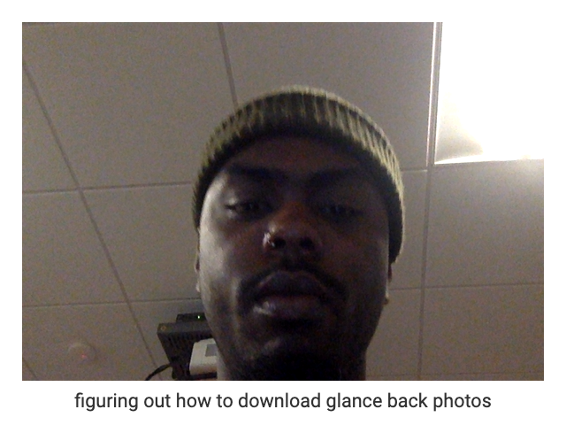
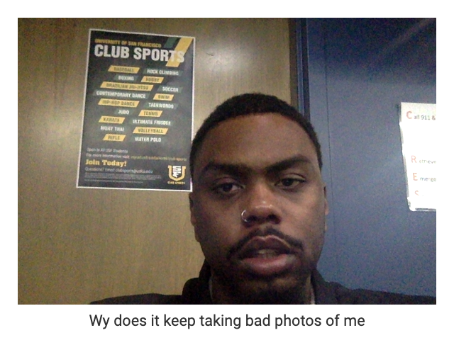

Daily Thoughts Throughout my Feed
With the help of Glance-Back, I will give you an inside look at what's going on in my mind as explore the internet.
Here are my reflections
"Yeah, yeah, you came back and you failed, uh
Second place, can't be in my face, oh, nah
Thick pockets, they think I'm rockin' Chanel" - Playboi Carti
Before school started back during winter break, I was going through a mental life crisis on whether cutting my hair for the new year 2024 would mean a new year for me. As days passed through the first weeks of being back, I started to regret chopping off my hair. I've grown used to the new hairstyle, but I still miss my dreads.

I was still getting used to the glance-back photos. Still, I wasn't prepared for when it took pictures of me, so when it started taking a photo of me, I became irritated because I wasn't prepared.

As simple as it is downloading photos from Glance-Back, I still couldn't understand where to go to download photos even though it's literally right in your face when you open your browser with Glance-back.

Again, the ops of Glance-Back has caught me lacking again. I was just wondering when will I ever be ready for Glance-Back to take a picture of me.
You ever wake up in the morning and look at your notifications just to see that playboicarti dropped another classical song. This was what I was thinking after listening to '2024' by playboicarti on my way to work.
Supreme recently dropped a collaboration with NorthFace that featured Split Taped Seam Shell Jacket that's waterproof which allows you switch out and mix & match different jackets for your own style choice. This was the highlight of my day when Supreme dropped the jacket. I am planning to get multiple of those jackets in a size XL.